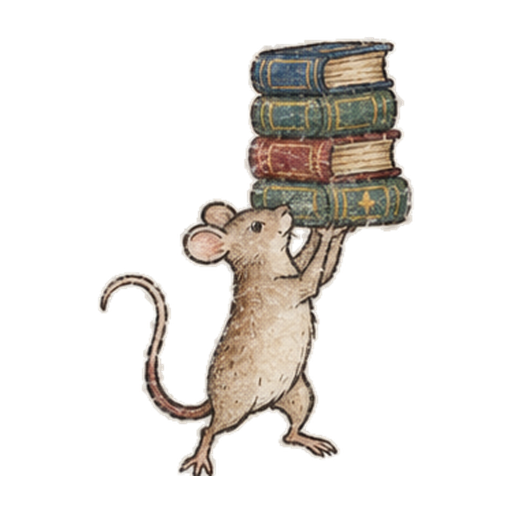
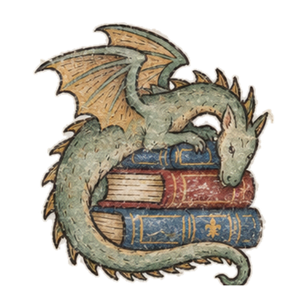
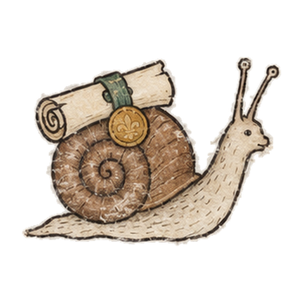
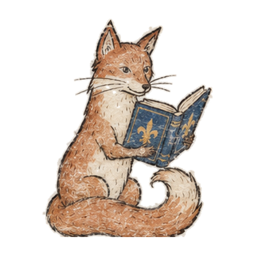
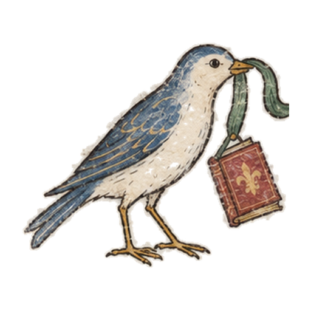
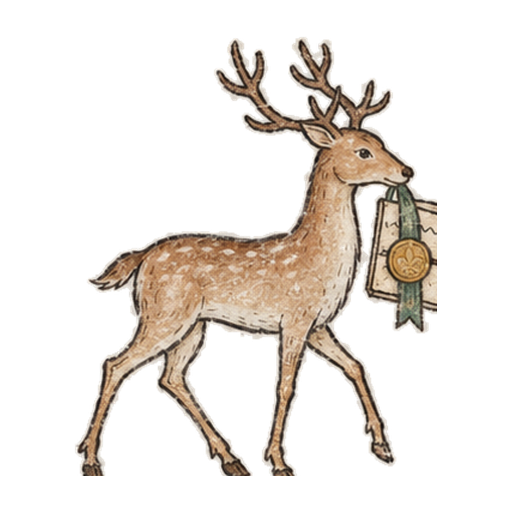

I'm New Here
Meet the people, decode the acronyms, and find the handful of things you actually need first.
Start the new-faculty guideYes, you can ask that question. Someone else is also pretending they already know.
Nine colleges · One English community
Welcome to a shared space for English faculty across LACCD—a place to find people, teaching ideas, district answers, events, opportunities, and work our colleagues think is worth sharing.
Adjunct, full-time, brand-new, longtime faculty: you belong here.
Welcome to the inner circle. Plot twist: there is no outer circle.
Start somewhere useful
You should not need to understand district governance before you can find an answer—or know which acronym to whisper into which ancient doorway.

Meet the people, decode the acronyms, and find the handful of things you actually need first.
Start the new-faculty guideYes, you can ask that question. Someone else is also pretending they already know.

Browse assignments, activities, OER, course ideas, and resources shared by LACCD English faculty.
Browse teaching resourcesSomeone already built this. Let us save you three hours.

Curriculum, governance, minutes, policies, forms, and the shortest path to the thing you actually came for.
Find district informationThe curriculum snail asks that we respect his process.

Find colleagues by college, course, teaching interest, project, or expertise.
Find English facultySomeone else has thoughts about the curtains. We promise.

Readings, workshops, meetings, literary events, professional learning, and opportunities across all nine colleges.
See district English eventsOne calendar. Nine colleges. Miracles happen.
Share an assignment, publication, event, opportunity, project, resource, or idea with colleagues.
Share with the districtModesty has been temporarily suspended. Proper attribution still applies.
A particular welcome to adjunct faculty
If you teach even one English class in LACCD, the work you do matters here. Your experience matters. Your questions matter. Your ideas matter. We want you in the conversation.
You do not need to be full-time, tenured, serving on a committee, or already fluent in district acronyms. Come to an event. Share something you made. Find someone teaching the same course. Ask how something works. Participate at the level your time allows.
We're glad you're here, and we love what you bring to our students and to one another.
Adjunct faculty are faculty. Conveniently, the noun was already right there.

The English commons
Teaching can get weirdly solitary for a job involving this many humans. The district should make it easier to find someone who teaches what you teach, cares about what you care about, or already survived the thing you're trying to figure out.
Publications, assignments, OER, conference work, literary projects, teaching experiments, and the occasional Canvas page so good someone should probably frame it.
See faculty workBragging is permitted when properly cited.
Don't know who handles something? Don't recognize an acronym? Need the form everyone else apparently received telepathically? Ask. Nobody should have to learn a nine-college district through folklore.
Help me find the right personThe snail has the form. Unfortunately, he is the snail.